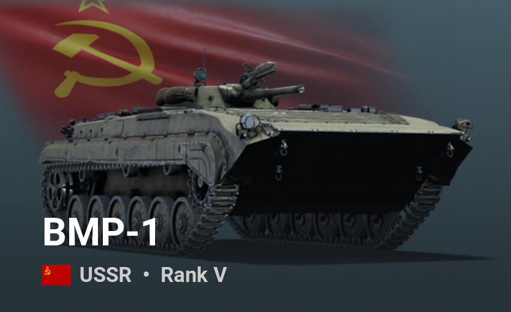

Losowe pojazdy yey
The BT-7 was the last of the BT series of Soviet cavalry tanks that were produced in large numbers between 1935 and 1940. It was lightly armoured, but reasonably well-armed for the time, and had much better mobility than other contemporary tank designs. The BT tanks were known by the nickname Betka from the acronym, or its diminutive, Betushka. The BT-7's successor was the famous T-34 medium tank, introduced in 1940, which replaced all of the Soviet fast tanks, infantry tanks, and medium tanks then in service.

T-34-85 – czołg średni konstrukcji radzieckiej z okresu II wojny światowej. Czołg T-34-85 zbudowany był w tzw. klasycznym układzie konstrukcyjnym. Kadłub o pochyłych ścianach, zmniejszających ryzyko przebicia przez pociski przeciwpancerne, wykonany został z walcowanych płyt pancernych o maksymalnej grubości 60 mm. Wieża zrobiona była z elementów odlewanych połączonych metodą spawania. Wnętrze pojazdu podzielone było na trzy przedziały: kierowania, bojowy i napędowy.
I jak jeszcze raz ktoś nazwie ten model "Rudy" to 😶🌫️, znajde go
IS-4 (ros. ИС-4) – czołg ciężki, konstrukcji radzieckiej, z okresu po II wojnie światowej. Najcięższy z czołgów, który znalazł się na wyposażeniu sił zbrojnych ZSRR. Prace nad prototypem IS-4 rozpoczęto w Czelabińsku bez oficjalnego zamówienia ze strony Dowództwa Wojsk Pancernych i Zmechanizowanych i bez zezwolenia rządowego. Miał to być pojazd konkurencyjny dla IS-2, przewyższający go pod względem podstawowych wskaźników bojowych, a w przyszłości mający go zastąpić. Czołg IS-4 powstawał w roku 1944 równolegle z czołgiem ciężkim IS-3 i miał być przeciwwagą dla niemieckiego czołgu ciężkiego PzKpfw VI B Königstiger.
Pancyr-S1 (ros. Панцирь-С1, indeks GRAU 96K6, kod NATO SA-22 Greyhound) – współczesny rosyjski samobieżny przeciwlotniczy zestaw artyleryjsko-rakietowy. System zapewnia ochronę bliskiego zasięgu przed zmasowanym atakiem w wykonaniu samolotów, śmigłowców czy pocisków broni precyzyjnej poruszających się z prędkościami do 1000 m/s i minimalnej skutecznej powierzchni odbicia mieszczącej się w przedziale 0,03–0,06 m², bez względu na porę dnia, warunki pogodowe i klimatyczne. Jeden wóz systemu Pancyr-S1 jest w stanie kontrolować od 8 do 12 celi na minutę. Zainstalowanie go na platformie kołowej pozwala również na ochronę jednostek znajdujących się w ruchu, np. kolumn wojsk czy ciężarówek z zaopatrzeniem.
Honorable mention:
BMP-1 (ros. Боевая машина пехоты, w Polsce oznaczony BWP-1) – radziecki bojowy wóz piechoty. Wprowadzony do uzbrojenia w 1966 roku. Był nowatorską konstrukcją i uważany jest za pierwszy skonstruowany od podstaw i produkowany seryjnie bojowy wóz piechoty na świecie. BMP-1 jest bojowym wozem piechoty przeznaczonym do współdziałania z czołgami. Stanowi wyposażenie oddziałów piechoty zmechanizowanej. Jest zdolny do przewożenia piechoty, zapewniając jej zabezpieczenie przed pociskami broni ręcznej oraz wsparcie ogniowe, gdy przystępuje ona do działania poza pojazdem. Załogę BMP-1 tworzą: dowódca, działonowy-operator, kierowca i ośmiu żołnierzy desantu. Kierowca i dowódca zajmują miejsce w przedziale kierowania (jeden za drugim), działonowy w wieży (przedział bojowy) znajdującej się w centralnej części wozu, żołnierze desantu w przeznaczonych dla nich dwóch przedziałach umieszczonych w tylnej części pojazdu. W przedniej części kadłuba znajduje się przedział napędowy z silnikiem.
Wersje produkcyjne i pojazdy pochodne
- BMP-1 (w Polsce: BWP-1) – wersja podstawowa z działem 73 mm; z tym samym oznaczeniem występuje również wersja z ograniczonym lewym przedziałem desantowym – zamiast czterech – dwa miejsca, w której na stalowej ramie została zamontowana radiostacja. Wóz w tej wersji używany jest jako wóz dowódcy kompanii, batalionu (bataliony zmechanizowane) lub plutonu (np. bataliony i kompanie saperów)
- BRM-1 (BMP-R) – wariant zwiadowczy – z powiększoną wieżą, lecz bez wyrzutni przeciwpancernych pocisków kierowanych.
- BRM-1K (w Polsce: BWR-1K) – wariant zwiadowczy, z radarem PSNR-5K (inna nazwa 1RL-133-1)
- BMP-1KSz – wóz dowodzenia; używany na poziomie pułku-dywizji, nie posiada uzbrojenia (od 1976)
- BMP-1P – z wyrzutnia przeciwpancernych pocisków kierowanych 9M113 Konkurs (od 1979)
- BMP-1PK – wariant wozu dowodzenia BMP-1P.
- PRP-3 – wóz rozpoznania artyleryjskiego. Posiada wieżę z radarem artyleryjskim. W armii rosyjskiej w każdym batalionie haubic 2S1 Goździk i 2S3 Akacja jest jeden PRP-3.
- IRM (inżeniernaja razwiedywatielnaja maszyna) – wóz inżynieryjny używany do rozpoznania inżynieryjnego i rozminowywania, posiada wydłużony kadłub z siedmioma parami kół nośnych.
- BMP-PPO – wóz do szkolenia kierowców BMP-1.
- VPV – czeski wóz zabezpieczenia technicznego.
- BPzV (w Polsce: BWR-1S) – czeski wariant zwiadowczy
- OT-90 – czechosłowacki transporter opancerzony wykorzystujący podwozie i kadłub BMP-1.
- MLI-84 – wersja rumuńska o wydłużonym kadłubie.
- BMP-1U – ukraińska modernizacja BMP-1 z modułem wieżowym KBA-105 Szkwał oraz przyrządami obserwacyjno-celowniczymi i system kierowania ogniem produkcji ukraińskiej
- BREM-2 – radziecki wóz zabezpieczenia technicznego (od 1982)
- BMP-1AM Basurmanin – rosyjska modernizacja BMP-1 z zdalnie sterowaną wieżą BPPU-1 znaną z transportera opancerzonego BTR-82A, wyposażoną w armatę 2A72 kal. 30 mm oraz system ppk 9K115 Metys. Zainstalowano też nowy silnik UTD-20S1 o mocy 300KM i radiostacje R-168-25U-2 (od 2020)